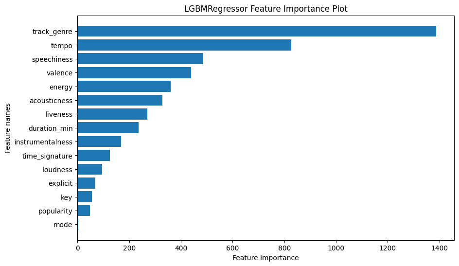

ML Model for the Perfect Party Playlist!🎉
This research project was implemented using Python.
Executive Summary
Join me in the fascinating journey of exploring the power of data science in crafting the ultimate soundtrack for an unforgettable summer dance party!
The task was to curate a playlist of 50 songs that would entice the guests to dance at a company's summer party! 💃 You may find the complete code here.
Spotify dataset (modified from the original source on Kaggle) comprises 20 columns and 113027 entries, including the following information:
- unique track_id
- artists
- album_name
- track_name
- track_genre
- various characteristics of the track: popularity, duration_ms, explicit, danceability, energy, key, loudness, mode, speechiness, acousticness, instrumentalness, liveness, valence, tempo, time_signature
In this project, I employed descriptive statistics and data visualization techniques to delve into the dataset, unraveling relationships between various features. Subsequently, I crafted a machine learning model designed to forecast the danceability of tracks. After thorough analysis of the model's outcomes, I curated the ultimate 50-song playlist tailored for the ideal summer party. Each track selection was meticulously justified based on both the model's findings and the initial dataset analysis conclusions.
The initial analysis showed valence and loudness exhibit some positive correlation with danceability. it also revealed genres with the highest average danceability score, among which it was no surprise to find dancehall, latino, techno and funk. Furthermore, the analysis demonstrated that tracks with 4/4 time signature tend to garner higher danceability ratings.
Comparing models, it became evident that boosting algorithm outperformed others, with LighGBM exhibiting the most favorable metrics. The feature importance analysis of the LightGBM model revealed the most significant features to predict danceability are: track_genre, tempo, speechiness, valence and energy.
The partial dependence analysis confirmed the positive correlation between valence and danceability. It revealed that the tempo of the most danceable tracks typically falls within the range of 100 to 130 beats per minute. Additionally, the analysis indicated that tracks with higher danceability tend to have speechiness levels of at least 0.07 and higher. Conversely, for a track to achieve a higher danceability score, the level of energy shouldn't exceed 0.7.
Given that the model identified track_genre as the most significant feature, I made it a focal point while curating the playlist. Specifically, I handpicked around 30 genres with the highest average danceability scores. Additionally, I integrated further constraints provided by the model into the playlist crafting process. This involved selecting tracks with optimal tempo and energy levels, known to enhance danceability. Moreover, considering both the model and initial data analysis emphasized the importance of valence in determining danceability, I chose tracks with a valence score of greater than or equal to 1.5 times the average valence score.
Although the model didn't emphasize the importance of popularity in determining a track's danceability, I decided to incorporate an additional criterion into the playlist curation process. Specifically, I opted to include only those tracks with a popularity rating higher than 65. This decision was based on the practical intuition that people tend to dance more enthusiastically to songs they recognize.
The final playlist comprised of dance, funk, dancehall and other genres with high average danceaility scores. The playlist includes tracks by artists such as Bad Bunny, Manuel Turizo, and Maluma, whose songs get the highest average popularity score and chart-toppers of our era such as BTS, Doja Cat and The Chainsmokers.
Click here to play the Perfect 50 songs Playlist for you next summer dance party 💃.
Data Analysis
After the data cleaning process, which included handling missing data, erroneous data and deletion of duplicates and outliers we were left with 20 columns and 79894 rows.
The analysis of numeric features allowed us to conclude:
- None of the features seem to follow a normal distribution
- duration_ms and speechiness are right-skewed, while loudness is left-skewed
- popularity, speechiness, acousticness, instrumentalness, liveness displayed negative asymmetry
- danceability and energy displayed positive asymmetry.
As the heatmap showed, danceability has:
- a moderate positive correlation with valence
- a weak positive correlation with loudness
- a weak negative correlation with instrumentalness, acousticness, and liveness.
Based on the initial analysis, we can conclude a track gets a higher danceability score if:
- it has a higher valence - it's more positive
- it's louder
- it has 4/4 time signature
- it has one of the following genres: kids, chicago-house, latino, reggaeton, minimal-techno, dancehall, detroit-techno, funk, reggae or children.
Model Development
Since danceability is a continuous numerical variable, regression would be an appropriate machine learning model. Four distinct model types were selected:
- Elastic Net as a linear model combining L1 (Lasso) and L2 (Ridge) regularization techniques
- Decision Tree Regressor as a tree-based model
- Random Forest Regressor as an ensemble bootstrapping algorithm
- LGBMRegressor as an ensemble boosting algorithm.
After thorough hyperparameter tuning models' performance was evaluated through cross-validation.
As it's seen from the graph, the LGBMRegressor appeared to be a top-performing model, exhibiting the lowest MSE on both train and test sets and the highest R-squared.
The examination of residuals supported our choice of the model. The histogram of residuals displays a symmetric bell-shaped curve, characteristic of a normal distribution. Likewise, the residuals plot depicts a random scattering of points around the horizontal line at y=0, indicating that the residuals are evenly distributed across the range of predicted values. These findings are consistent with the assumptions of the regression model and suggest that the model adequately captures the underlying relationships within the data.
Model Analysis
The most important features of the model turned out to be: track_genre, tempo, speechiness, valence and energy.
The partial dependence plots suggest that the track with the highest danceability:
- has a tempo from 100 to 130
- speechiness higher than 0.07
- higher valence
- energy less than 0.7.
Playlist Curation
The model indicated track_genre as the most important feature to predict danceability - it should definitely be taken into account while creating a playlist. To ensure a vibrant party atmosphere, I've meticulously chosen around 30 genres with the highest average danceability scores, omitting some genres that are high in danceability but seem inappropriate for a party, such as kids, children, sad or even disco (as this one is truly a bit outdated).
I've also taken into account the model's recommendations regarding tempo and energy features.
Although the model didn't prioritize popularity as a significant factor in danceability prediction, I've opted to include only tracks with a popularity score exceeding 65. This decision is based on the intuition that people are more inclined to dance to familiar tunes.
It's not surprising our playlist mostly consists of dancehall, dance and latino songs - genres with very high average danceability score, as shown in the initial analysis. The playlist also contains other genres with high danceability, such as funk, house, and reggaeton.
We've included tracks by BTS, one of the most popular artists of our time, which are sure to be a hit with our audience. Additionally, our lineup includes tracks by esteemed artists such as Doja Cat, Charlie Puth, The Chainsmokers, One Direction and Jennifer Lopez.
Our playlist offers a vibrant mix of songs in English, Spanish (Latino), and Korean (K-pop), guaranteeing our guests an engaging and dynamic experience. Moreover, the energy and tempo of all the chosen tracks matches the model's recommendations.
These chosen tracks are not only highly popular but also boast impressive predicted and actual danceability scores, setting the stage for an unforgettable dance party.
Time to have fun! 🎉
You may check the complete code following the link below.